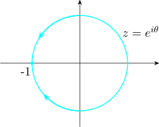

4.3 Continuity of Complex Functions
Definition 4.18. Let \(D\subseteq \mathbb {C}\). A function \(f: D \longrightarrow \mathbb {C}\) is said to be continuous at a point \(z_0\in D\) if given \(\varepsilon > 0 \,\exists \,\delta > 0 \ni \left |f(z) - f(z_0)\right | < \varepsilon \) whenever \(\left |z - z_0\right | < \delta \).
OR
A complex function \(f\) is continuous at a point \(z_0\) if \(\lim \limits _{z\rightarrow z_0}f(z) = f(z_0)\)
Criteria for Continuity at a Point
A complex function \(f\) is continuous at a point \(z_0\) if each of the following three conditions
hold
- 1.
- \(\lim \limits _{z\rightarrow z_0}f(z) \) exists
- 2.
- \(f\) is defined at \(z_0\) and
- 3.
- \(\lim \limits _{z\rightarrow z_0}f(z) = f(z_0)\)
If a complex function is not continuous at a point \(z_0\), then we say that \(f\) is discontinuous at \(z_0\). For example
the function \(f(z) = \frac {1}{1 + z^2}\) is discontinuous at \(z = i\) and \(z = -i\).
Sequential Definition of Continuity
Let \(D\subseteq \mathbb {C}\). A function \(f: D\longrightarrow \mathbb {C}\) is said to be continuous at a point \(z_0\in D\) if \(\forall \{z_n\}^{\infty }_{n = 1}\ni z_n \in D\, \forall n \in \mathbb {N}\,\& \, z_n \longrightarrow z_0, \, \lim \limits _{z_n \rightarrow 0} f(z_n ) = f(z_0)\).
Example 4.19. Determine if \(f(z) = z^2 - iz + 2\) is continuous at \(z_0 = 1 - i\).
Solution
We must find \(\lim \limits _{z\rightarrow z_0}f(z)\) and \(f(z_0)\). Now \(\displaystyle { \lim \limits _{z\rightarrow z_0}f(z) = \lim \limits _{z\rightarrow (1 - i)}(z^2 - iz + 2) = 1 - 3i}\)
Furthermore, \(f(z_0) = f(1 - i) = (1- i)^2 - i(1 - i) + 2 = 1 - 3i\)
Since \(\lim \limits _{z\rightarrow z_0}f(z) = f(z_0)\), we conclude that \(f(z)\) is continuous at the point \(z_0 = 1 -i\).
Example 4.20. Show that the principal square root function \(f(z) = z^{1/2}\) is discontinuous at \(z = -1\).
Solution
We show that \(f(z) = z^{1/2}\) is discontinuous at \(z_0 = -1\) by demonstrating that
\(\lim \limits _{z\rightarrow z_0}f(z) = \lim \limits _{z\rightarrow -1}z^{1/2}\) does not exists.
Recall that the principal square root function is defined by \(\displaystyle {z^{1/2} = \left |z\right |^{1/2}\, e^{i\,Arg(z) / 2}}\)
Now consider \(z\) approaching \(-1\) along the quarter of the unit circle lying in the second quadrant.

That is, consider the points \(\left |z\right | = 1, \, \frac {\pi }{2} < \operatorname {arg}(z) < \pi \). In exponential form, this approach can be described as \(z = e^{i\theta }, \quad \frac {\pi }{2}< \theta < \pi ,\) with \(\theta \) approaching \(\pi \). Thus letting \(\left |z\right | = 1\) and letting \(Arg(z) = \theta \) approach \(\pi \), we obtain \[ \lim \limits _{z\rightarrow -1}z^{1/2} = \lim \limits _{z\rightarrow -1}\left |z\right |^{1/2}\,e^{i\,Arg(z)/2} = \lim \limits _{\theta \rightarrow \pi }\sqrt {1}\,e^{i\theta / 2}\]
However, since \(\,\displaystyle {e^{i\theta /2} = \cos \frac {\theta }{2} + i \sin \frac {\theta }{2}}\,,\,\) this simplifies to \begin {align*} \lim \limits _{z\rightarrow -1}z^{1/2} & = \lim \limits _{\theta \rightarrow \pi }\Big ( \cos \big (\frac {\theta }{2}\big ) + i \sin \big (\frac {\theta }{2}\big )\Big )\\ & = i\quad \cdots \cdots \quad (*) \end {align*}
Next, we let \(z\) approach \(-1\) along the quarter of the unit circle lying in the third quadrant. Along this curve, we have the points \(z = e^{i\theta }, \quad \pi < \theta < \frac {-\pi }{2}\) with \(\theta \) approaching \(-\pi \). By letting \(\left |z\right | = 1\) and \(Arg(z) = \theta \) approach \(-\pi \), we find \begin {align*} \lim \limits _{z\rightarrow -1} & = \lim \limits _{z\rightarrow -1}\left |z\right |^{1/2}\,e^{i\,Arg(z)/z} = \lim \limits _{\theta \rightarrow -\pi }e^{i\theta /2}\\ & = \lim \limits _{\theta \rightarrow -\pi }\Big (\cos \Big (\frac {\theta }{2}\Big ) + i \sin \Big (\frac {\theta }{2}\Big )\Big )\\ & = -i\quad \cdots \quad (**) \end {align*}
Because \((*)\) and \((**)\) do not agree, we conclude that \(\lim \limits _{z\rightarrow -1}z^{1/2}\) does not exist.
Definition 4.21. A complex function \(f\) is continuous on a set \(D\) if \(f\) is continuous at \(z_0\) for each \(z_0\) in \(D\).
Theorem 4.22. Let \(D\subseteq \mathbb {C}\). A function \(f: D\longrightarrow \mathbb {C}\) is continuous if and only if the inverse image of an open set in \(\mathbb {C}\) is open in \(D\).
Proof. Suppose that \(u\subseteq \mathbb {C}\). If \(f^{-1}(u) = \emptyset \) then since \(\emptyset \) is open in \(D\), the statement is true.
If \(f^{-1}(u) \neq \emptyset \), let \(z_0 \in f^{-1}(u)\). Let \(w_0 = f(z_0) \in u\). Since \(u\) is open in \(\mathbb {C}\,\exists r > 0 \ni B(w_0;r)\subseteq u\). Since \(f\) is continuous at \(z_0\, \exists \delta > 0 \ni \left |f(z) - f(z_0)\right | < r\) whenever \(0 < \left |z - z_0\right |< \delta \) and \(z \in D\) . i.e whenever \(z \in B(z_0;\delta ) \cap D, \quad f(z) \in B(w_0; r)\).
\[i.e \quad f(B(z_0; \delta ) \cap D)\subset B(w_0;r)\subset u\]
\(f^{-1}(u)\) contains \(B(z_0; \delta ) \cap D\). So \(f^{-1}(u)\) is open in \(D\)
Conversely, suppose that the inverse image of any open set in \(\mathbb {C}\) is open in \(D\).
Let \(z_0 \in D\) and let \(w_0 = f(z_0)\). Since \(B(w_0;r)\) is an open set in \(\mathbb {C}\) there is a \(\delta > 0 \ni f^{-1}\big (B(w_0;r)\big )\) is open in \(D\) and since \(z_0 \in f^{-1}\big (B(w_0; r)\big )\) there is
\(\delta > 0 \ni D\cap B(z_0;\delta ) \subset f^{-1}\big (B(w_0;r)\big )\implies f(B(z_0; \delta ) \cap D) \subset B(w_0; r)\), this implies that \(f\) is continuous at \(z_0\). □
Theorem 4.23. Suppose that \(f(z) = u(x,y) + iv (x,y)\) and \(z_0 = x_0 + i y_0\). Then the complex function \(f\) is continuous at the point \(z_0\) if and only if both real functions \(u\) and \(v\) are continuous at the point \((x_0, y_0)\).
Example 4.24. Show that the function \(f(z) = \overline {z}\) is continuous on \(\mathbb {C}\).
Solution
So we have that \(f(z) = \overline {z} = x -iy\) is continuous at \(z_0 = x_0 + iy_0\) if both \(u(x,y) = x\) and \(v(x,y) = - y\) are continuous at \((x_0, y_0)\).
Because \(u\) and \(v\) are two variable polynomial functions, it follows that \(\lim \limits _{(x,y)\rightarrow (x_0, y_0)}u(x,y) = x_0\) and \(\lim \limits _{(x,y)\rightarrow (x_0, y_0)}v(x,y) = -y_0\). This implies that \(u\)
and \(v\) are continuous at \((x_0, y_0)\) and therefore \(f\) is continuous at \(z_0 = x_0 + iy_0\). Since \(z_0= x_0 + iy_0\) was an arbitrary point then we
conclude that \(f(z) = \overline {z}\).
Theorem 4.25. If \(f\) and \(g\) are continuous at the point \(z_0\), then the following are continuous at the point \(z_0\)
- 1.
- \(Cf,\,C\) is a complex constant
- 2.
- \(f\pm g\)
- 3.
- \(f\cdot g\) and
- 4.
- \(\frac {f}{g}\) provided \(g(z_0)\neq 0\)
Theorem 4.26. Polynomial functions are continuous on the entire complex plane \(\mathbb {C}\)
Also, Rational functions are continuous on their domains.
A Boundary Property
If a complex function \(f\) is continuous on a closed and bounded region \(\Omega \), then \(f\) is bounded on \(\Omega \). That is,
there is a real constant \(M> 0\) such that \(\left |f(z)\right | < M\) for all \(z\in \Omega \).
Questions on this section
Stuck on something here? Ask below and it stays attached to this topic.